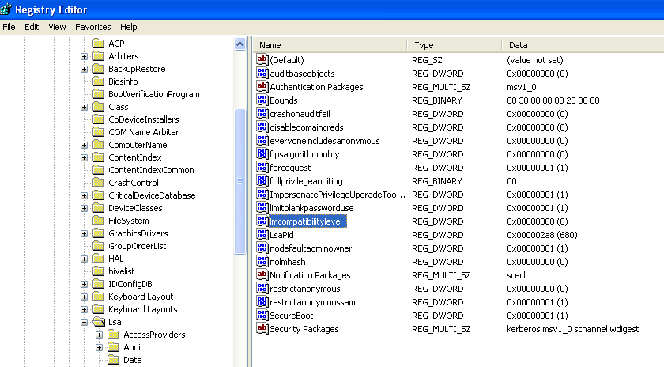

Windows XP/7
Windows XP & 7: increase Network Authentication Security1. Open regedit.exe
2. Navigate to HKLM\System\CurrentControlSet\control\LSA. Click on LSA
3. If you don’t see LMCompatibilityLevel in the right window pane, then choose: Edit > New > REG_DWORD.
4. Replace “New Value #1” with “LMCompatibilityLevel”.
5. Double-click on LMCompatibilityLevel in the right window pane.
6. Enter “5”. (hexadecimal or decimal doesn’t matter)
| Value | Meaning |
|---|
| 0 | Send LM and NTLM response; never use NTLMv2 session security. Clients will use LM and NTLM authentication, and never use NTLMv2 session security. Domain controllers will accept LM, NTLM and NTLMv2 authentication. |
| 1 | Use NTLMv2 session security if negotiated. Clients will use LM and NTLM authentication, and use NTLMv2 session security if the server supports it. Domain controllers accept LM, NTLM and NTLMv2 authentication. |
| 2 | Send NTLM response only. Clients will only use NTLM authentication, and use NTLMv2 session security if the server supports it. Domain controller accepts LM, NTLM and NTLMv2 authentication. |
| 3 | Send NTLMv2 response only. Clients will use NTLMv2 authentation, use NTLMv2 session security if the server supports it. Domain controllers accept LM, NTLM and NTLMv2 authentication. |
| 4 | Domain controller refuses LM responses. Clients will use NTLMv2 authentation, and use NTLMv2 session security if the server supports it. Domain controller refuses LM authentication (instead, it accepts NTLM and NTLMv2). |
| 5 | Domain controller refuses LM and NTLM responses (accepts only NTLMv2). Clients will use NTLMv2 authentation, use NTLMv2 session security if the server supports it. Domain controller refuses NTLM and LM authentication (accepts only NTLMv2). |